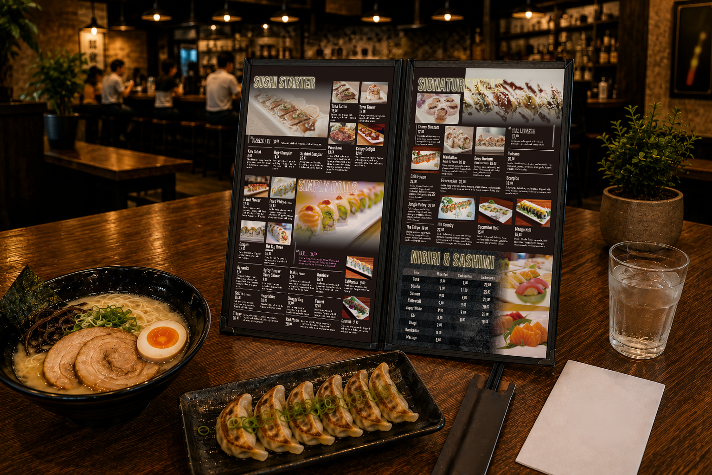

Works 魅力を伝える
豊富な料理の魅力を、
見つけやすく、選びやすく。
大まかな手書きラフと参考イメージをもとに、
ラーメンから寿司、ロール、一品料理まで、
多彩な料理を掲載するメニューブックを制作しました。
掲載内容を整理しながら、写真と文字のバランスを整え、
見つけやすさと選ぶ楽しさを両立しています。

ご相談から完成まで
-
01
ご要望
大まかな手書きラフと参考イメージを
もとに、多彩な料理を掲載できる
メニューブックへ。 -
02
設計・制作
掲載内容を整理し、料理写真・商品名・
価格・説明文の配置を設計。
カテゴリーごとに見やすく
レイアウトしました。 -
03
完成
黒を基調にネオン風の見出しを
組み合わせ、
店舗の活気が伝わる全4ページの
メニューブックに。
完成デザイン
案件情報
- 業種
- 飲食店・ジャパニーズレストラン
- 制作物
- メニューブック
- 仕様
- 全4ページ
- 掲載内容
- ラーメン・寿司・ロール・一品料理など
- 担当範囲
- 構成整理・レイアウト設計・デザイン・編集
- 支給素材
- 手書きラフ・参考イメージ・料理写真・原稿
- 使用ツール
- Illustrator / Photoshop
- 制作期間
- 7日
大まかなラフから、店舗が思い描く雰囲気を具体的なデザインへ。
情報量が多い制作物でも、魅力と見やすさの両立を大切にしています。

メニューの情報が多くても、
見やすく伝わる形に整理できます
掲載内容がまだ整理できていない段階でも大丈夫です。
お店の雰囲気や商品の特徴を伺いながら、
見やすく選びやすい構成を一緒に考えます。